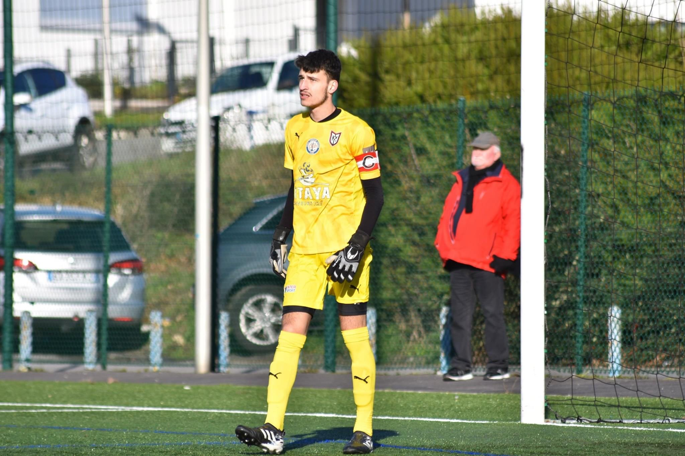
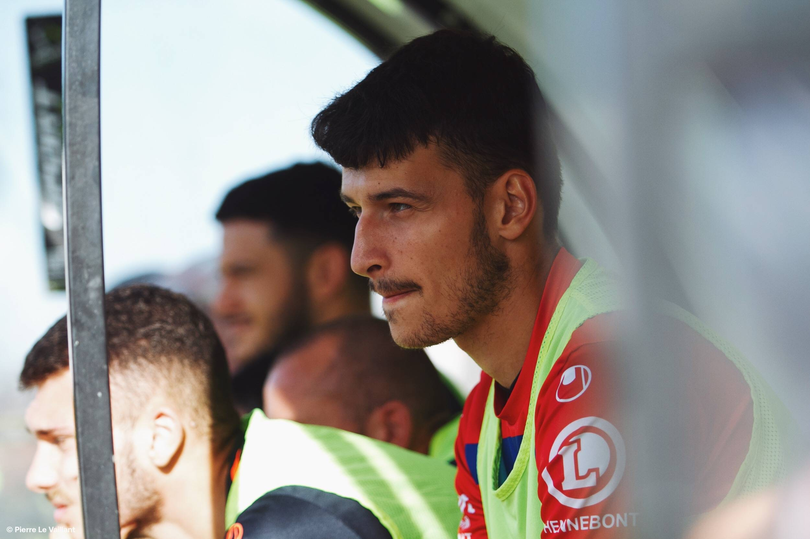
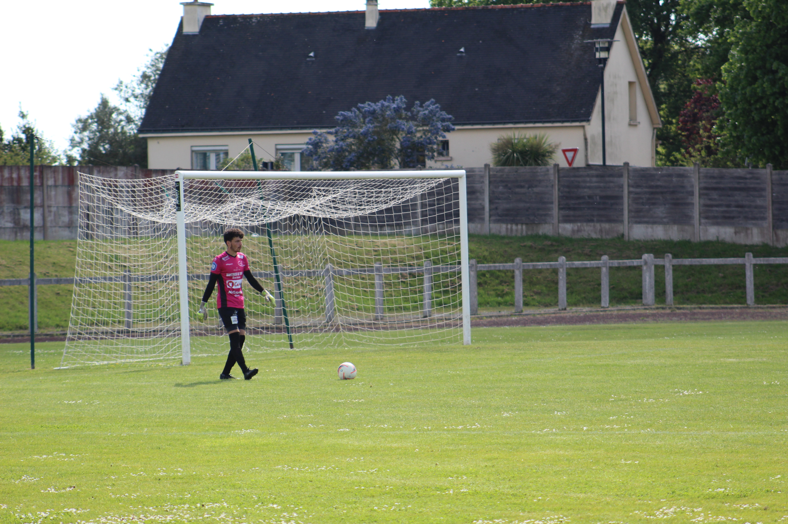
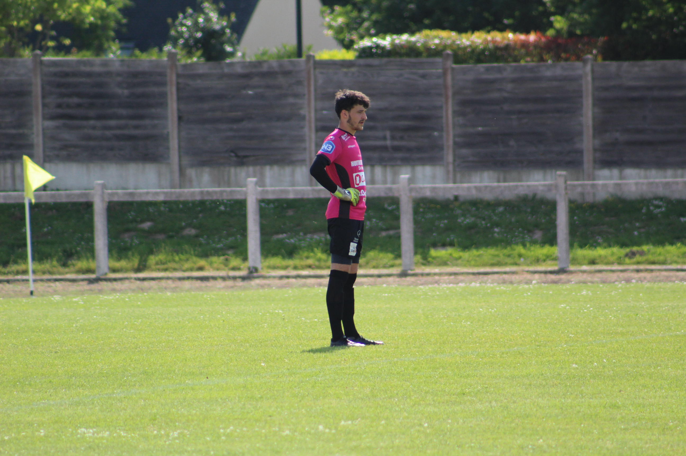
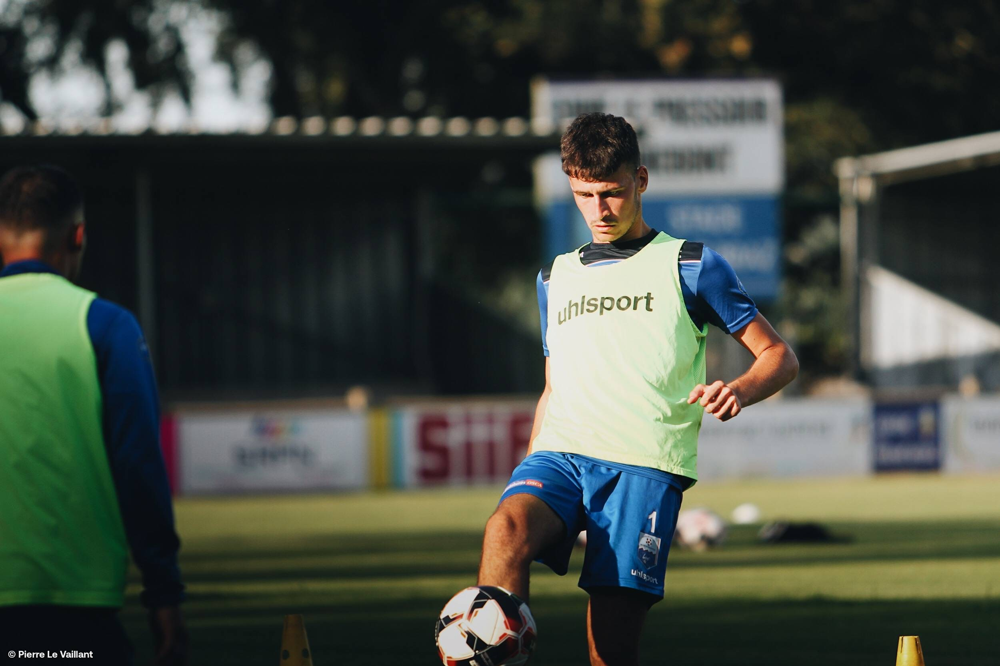
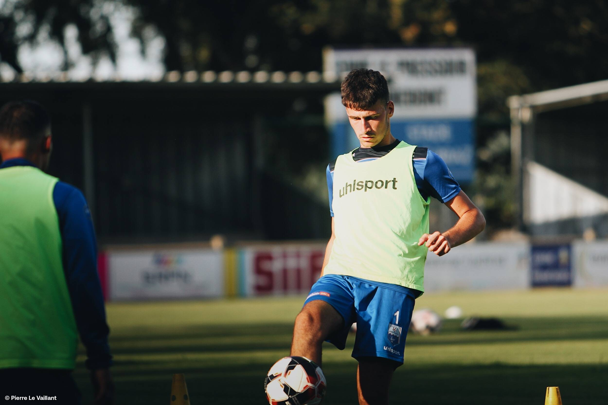
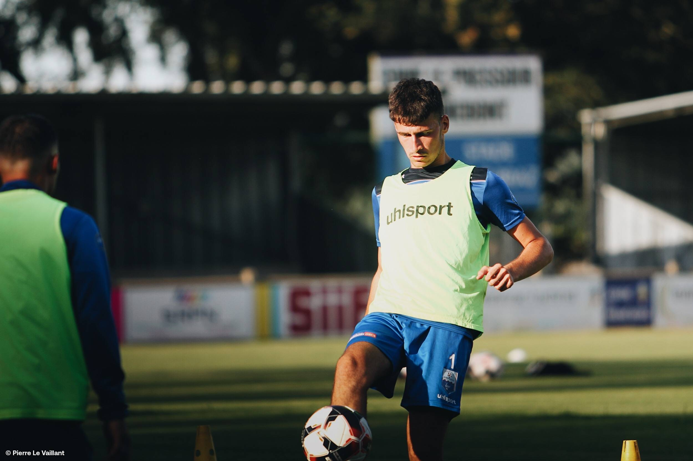
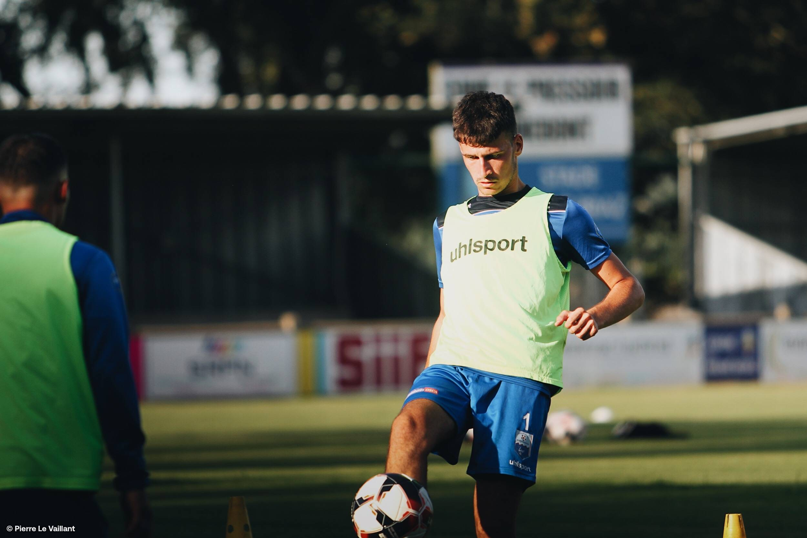

Pictures




 


Today, football is one of the most popular sports in the world, with over 2,000,000 licensed players in France. This popularity is largely due to the ease with which it can be played and the fact that the rules can be changed without affecting the game.
If we now look at how the game is organised, each team starts the match with a maximum of eleven players (including a goalkeeper) and there must always be at least seven players on the pitch. Since 1967, players have been allowed to be substituted without reason in official competitions. The number of substitutions in official matches has gradually risen from 1 to 3, and 4 in the case of extra time. Now, since the Covid-19 pandemic, the number of substitutions has risen to 5 (6 in extra time).
Footballers must wear the following equipment: a team shirt, shorts, socks, shin pads and boots.
A football match lasts 90 minutes, divided into two 45-minute periods. There is a 15-minute half-time between these two sessions. The aim is to score points in the opponents' half. A point is scored when the ball crosses the goal line completely between the two goalposts and under the crossbar. If there is a tie between the teams, the match is a draw. Players may be penalised for fouls. The yellow card is used as a warning for minor breaches of the ground rules. If the same player is shown two yellow cards in a match, this is converted into a red card. The player is then sent off the pitch. In addition, a red card can be shown directly if a player commits a serious offence.
